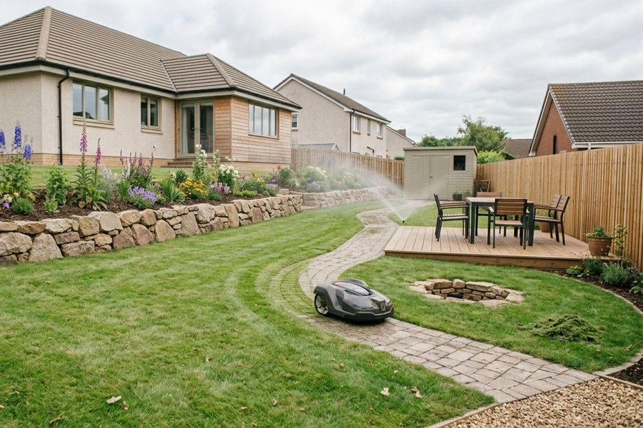
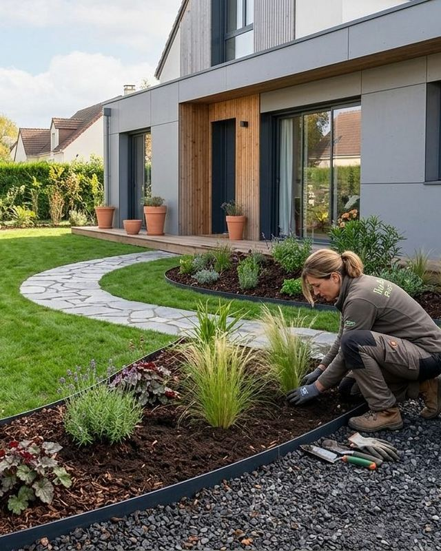
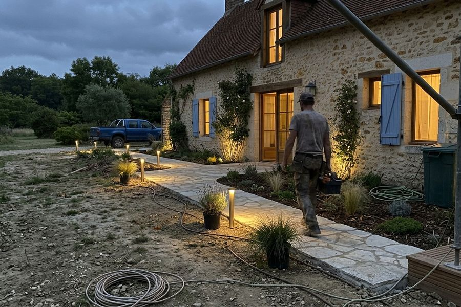
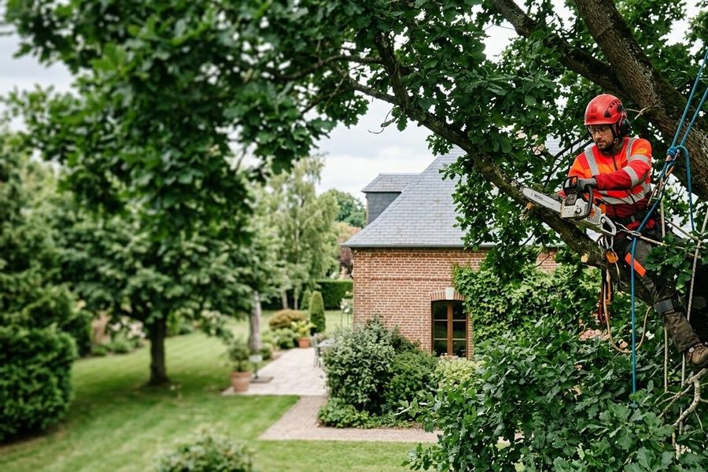
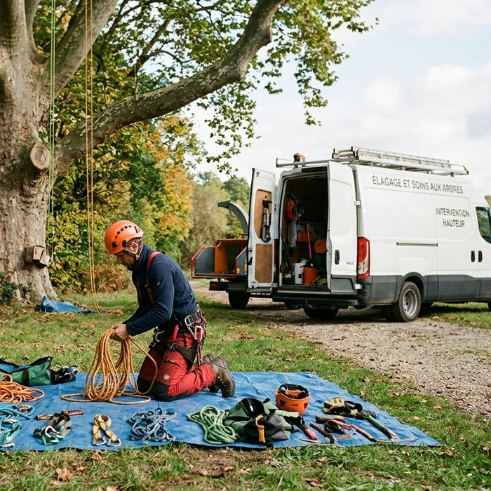

01
Arrosage automatique
Pose de systèmes d'arrosage automatique, pilotables à distance depuis votre smartphone grâce à nos dispositifs domotiques.
Paysagiste · Longjumeau (91)
Barbey Paysages crée et entretient les jardins des particuliers, copropriétés et entreprises autour de Longjumeau : terrasses, pelouses, bassins, arrosage automatique et élagage.

Nos prestations
Du premier croquis à l'entretien annuel, une seule entreprise pour votre jardin.
À partir de vos demandes, nous réalisons un croquis, puis nous aménageons votre jardin une fois vos propositions validées.
En savoir plusDes contrats d'entretien pour un jardin toujours verdoyant, et des pelouses en semis ou en gazon de placage.
En savoir plusTerrasses sur plots réglables en bois ou composite, clôtures, palissades et portillons.
En savoir plusCréation et entretien de bassins, avec ou sans poissons, et aménagement de leurs alentours.
En savoir plusTrois savoir-faire pour un jardin confortable à vivre.

01
Pose de systèmes d'arrosage automatique, pilotables à distance depuis votre smartphone grâce à nos dispositifs domotiques.

02
Installation de votre éclairage extérieur pour créer une ambiance cosy lors de vos soirées d'été.

03
Un élagueur diplômé dans l'équipe et du matériel dédié pour prendre soin de vos arbres.
À propos
Gaël Barbey a créé Barbey Paysages en juillet 2012 à Longjumeau, en Essonne. Passionné de jardins, il a passé toute sa carrière dans le jardinage et le paysagisme : responsable espace vert d'un magasin, puis commercial pour une importante pépinière allemande.
Son équipe s'est étoffée peu à peu et compte un élagueur diplômé. L'entreprise est propriétaire de son matériel, de plus en plus alimenté par batterie, moins bruyant et plus respectueux de l'environnement.
Gaël Barbey, fondateur

Notre méthode
Les étapes de la création de votre jardin.
Vous faites construire ou emménagez dans une maison ancienne : nous écoutons vos besoins et vos envies.
À partir de vos demandes, nous réalisons un croquis de votre futur jardin.
Lorsque vous validez nos propositions, nous nous chargeons de l'aménagement.
Nous vous proposons ensuite des contrats d'entretien pour un jardin toujours plaisant.
Contact
Appelez-nous ou écrivez-nous pour un devis : nous intervenons dans un rayon de 15 km autour de Longjumeau.